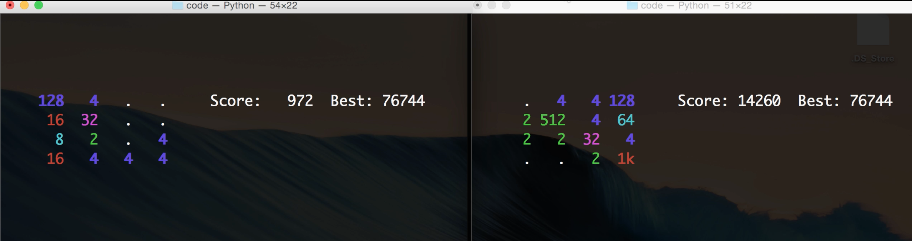
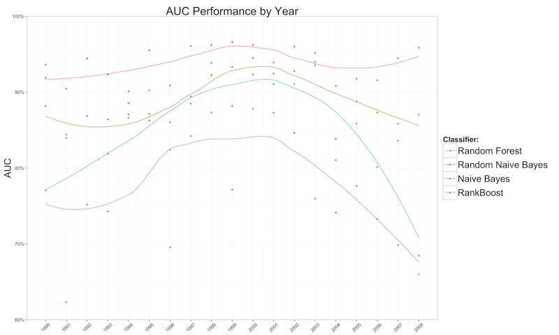
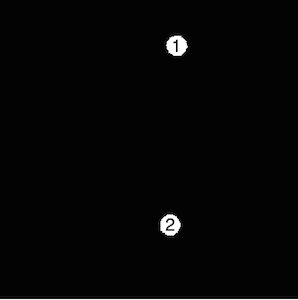
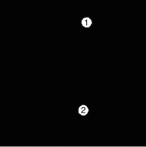
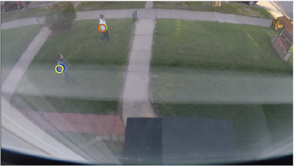
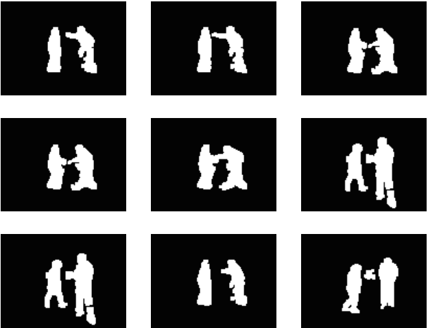

Monte Carlo Tree Search
In my artificial intelligence course I built used Monte Carlo Tree Search to play 2048. Below is a shot of me playing against the algorithm I developed during a presentation. The computer, playing on the right side, shows incredible speed and smart play even in comparison to a seasoned human player.
Random Naive Bayes
In my machine learning course I worked on a project to predict the top grossing movies in a year. One of my approaches followed that of Leo Breiman's Random Forest, but instead used Naive Bayes Classifiers as the base learner. Interestingly, when compared on ability to rank over a moving window, the Random Naive Bayes' model performed better than boosted decision trees. However, the results still couldn't top the original Random Forest.
Object Tracking and Behavior Classification
In my computer vision course I constructed an artificial data set exhibiting a variety of behaviors, such as one object following another:
 

This data was then used to tune an object tracking algorithm, and ultimately classify the type of behavior the objects exhibited. Finally, using the idea of transfer learning, the same model was applied on live videos to a surprising amount of accuracy!
Gesture Recognition
In my artificial intelligence II course, I built a gesture recognition system. The system incorporated a variety of computer vision techniques in order to extract poses from each video frame. The dataset that the final model was trained on was artificially inflated by creating randomly perturbed copies of each image. By perturbing each image, a kernel based clustering algorithm was able to extract similar poses - regardless of the location and size of the actor. For example, the images below are from a cluster that includes many poses related to fighting or shaking hands.
Sequences of poses were then modeled using a Hidden Markov Model to estimate the gesture exhibited.